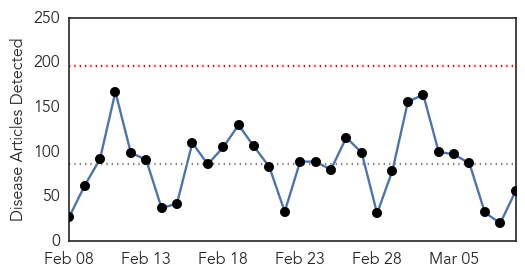

Ebola
30-Day Web Trend
0 alerts, 0 warnings

30-Day Twitter Trend
3 alerts, 5 warnings

Article Locations

Article Confidences

Top Articles:
- 1.000
- Ebola leaves ongoing health issues for survivors of the viral disease
- 1.000
- Last Ebola patient is released in Liberia
- 1.000
- Last Ebola patient is released in Liberia
- 1.000
- The Marietta Daily Journal
- 0.999
- Antiseptic shows 99.9% efficacy against Ebola virus
- 0.998
- Liberia Discharges its Last Ebola Patient
- 0.998
- In disease outbreaks, maps offer direction
- 0.998
- Liberia's Ebola hunters are trying to strike a death blow to the epidemic
- 0.997
- Ellen Addresses ACP-EU Parliamentarians; Holds Talks With EU Executives
- 0.996
- Patients get preliminary negative for Ebola in London, Ont., hospital
- 0.995
- Quarantined refugees test negative for Ebola
- 0.994
- New Ebola cases are declining: Why that's bad news for a cure
- 0.994
- Preventing Ebola could be a scrub away!
- 0.994
- UN aims to prevent the next pandemic through better disease detection in Africa
- 0.993
- Preventing Ebola could be a scrub away!
- 0.993
- WHO: Sharp decline in Ebola cases has now leveled off
- 0.991
- Ebola and the International Health Regulations Treaty
- 0.984
- Liberia president calls for zero Ebola cases, vigilance
- 0.981
- Toronto doctor returns from front line of Ebola fight
- 0.980
- Baltimore man arrested in robbery of 4-year-old girl, mother
- 0.980
- Rawlings-Blake to focus State of the City speech on small businesses
- 0.977
- Strong minds saves lives: Providing psychosocial support in Sierra Leone
- 0.976
- Vaccine for Ebola Reaching Last Trial Phase
- 0.975
- US President Barack Obama to bring back US troops fighting Ebola in West Africa
- 0.974
- Ebola – Resilience, Challenges and Opportunities in the U.S. and Beyond
- 0.972
- ABC Medical Editor Dr. Richard Besser Talks Medical Issues in Pr
- 0.968
- Ebola nurse returns to Liverpool after life-saving Sierra Leone mission
- 0.967
- Dead Que. man tests negative for Ebola
- 0.960
- Using public health education to fight Ebola: Roehampton online student example
- 0.960
- The Brother Went To Fight Ebola. So Did His Sister. Mom Was 'A Wreck'
- 0.951
- As Libya dialogue proceeds, UN Mission says participants determined to 'bridge differences'
- 0.951
- Rationalizing Lunacy: The Intellectual as Servant of the State
- 0.951
- New UK law will seek to prevent high risk individuals flying to Iraq and Syria
- 0.951
- Virgin Group in final stages of planning for two new cruise ship orders
- 0.951
- Here's how a gay man became the brother of his own son
- 0.951
- Greensboro News & Record: Nation / World
- 0.926
- Sierra Leone Christian addresses Queen
- 0.918
- Liberia’s Maritime Chief Addresses Challenges, Missteps
- 0.902
- China tourist train to DPRK resumes service - Xinhua
- 0.899
- AU Commends IMF For Offering Debt Relief To Sierra Leone
- 0.881
- African Union Thanks The Imf For The Sierra Leone Debt Relief Aid
- 0.871
- The World in Brief
- 0.866
- Hunger and frustration grow at Ebola ground zero in Guinea
- 0.839
- Senator lays out disease response plan
- 0.814
- South Carolina
- 0.814
- South Carolina
- 0.814
- South Carolina
- 0.814
- AU commends IMF for Sierra Leone debt relief
- 0.811
- AU commends IMF for Sierra Leone debt relief
- 0.808
- Daily American: World
Showing top 50 articles...
Top Tweets:
- 0.990
- Liberia Removes Ebola Crematorium as Outbreak Is Contained - U.S. News & World Report http://t.co/KmrwVEJvVj ebola EVD
- 0.973
- Phaedra: “Not the Ebola, girl!” - Vulture http://t.co/VkeLXkbXRb ebola EVD
- 0.973
- Phaedra: “Not the Ebola, girl!” - Vulture http://t.co/UEt16nZRE3 ebola EVD
- 0.961
- Ebola – African tourism travels the road back from the virus stigma - BizNews http://t.co/5NcIdBPkgq ebola EVD
- 0.938
- First look at hospitalized Ebola survivors' immune cells could guide vaccine ... - Medical Xpress http://t.co/FlL1Ak4kaH ebola EVD
- 0.927
- First Look at Hospitalized Ebola Survivors' Immune Cells Could Guide Vaccine ... - Infection Contr... http://t.co/pRQZ9zrmBI ebola EVD
- 0.879
- Can Mental Health Services Spur Economic Recovery in Ebola-ravaged Liberia? - Mad In America http://t.co/5fPNbe7x6b ebola EVD
- 0.878
- Ebola leaves ongoing health issues for survivors of the viral disease - Washington Post http://t.co/Enqpu4ShnK ebola EVD
- 0.828
- It's been 1yr since Ebola outbreak in WestAfrica 1st hit the news, but epidemic still continues. https://t.co/FPXQZWdn4K EndEbolaNow
- 0.820
- With Ebola crisis easing, efforts to test new drugs are in jeopardy - Los Angeles Times http://t.co/Pfs2cLzsEo ebola EVD
- 0.820
- With Ebola crisis easing, efforts to test new drugs are in jeopardy - Los Angeles Times http://t.co/Mw7ZdTrkc1 ebola EVD
- 0.796
- Ebola czar claims fight against Ebola is not over yet http://t.co/ypH3l25Awl
- 0.698
- ElbowOutEbola News: Ebola ‘leaves 12,000 orphans in Sierra Leone’ -... http://t.co/9KDtbCZwaW
- 0.672
- Daily media updates on avianflu avianinfluenza Ebola EbolaResponse MERS at http://t.co/43BakoOsTa
- 0.652
- RT: Response to Ebola focused on strengthening community based responses in W.Africa & U.S. @lastmilehealth…
- 0.650
- Modeling the 2014 Ebola Virus Epidemic: Agent-Based Simulations, Temporal Analysis and Future Predictions http://t.co/7MZfiP21di
- 0.633
- ElbowOutEbola News: Celebrating the woman who discovered Nigeria's Ebola patient zero and curbed an outbreak -... http://t.co/Bh5WLbP63F
- 0.611
- Toronto doctor returns from front line of Ebola fight - Toronto Star http://t.co/kjCTscHN2j ebola EVD
- 0.569
- Jimmy Thoronka: Homeless Sierra Leone athlete freed after outpouring of public ... - The Independent http://t.co/itXr8HdGxq ebola EVD
- 0.553
- RT: Africa, together we can defeat EBOLA AfricaAgainstEbola https://t.co/S5D3Lfkl4v and insert for the…
- 0.553
- ElbowOutEbola News: Engaging the African Diaspora Community on the International Ebola Response -... http://t.co/Sgb0D3GZur
- 0.513
- Strength From Within: First Pregnant Woman to Survive Ebola in Liberia Shares Her Story w/ the World https://t.co/cb1Y1U15Vr
Hemmorhagic Fever
30-Day Web Trend
0 alerts, 0 warnings

30-Day Twitter Trend
0 alerts, 0 warnings

Article Locations

Article Confidences

Top Articles:
-
No articles found for Mar 09, 2015
Top Tweets:
-
No tweets found for Mar 09, 2015